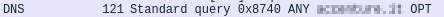

DNSSEC: make dns more secure
DNS Zone
Each DNS zone has a DNS Resource Recourd (zone file) that contain resource records: SOA, NS, A, MX,...
How to make DNS more secure: DNSSEC
In the chapter linked here there is a more in dept explanation of DNSSEC.
DNSSEC creates a secure domain name system by adding signed records with private keys to existing DNS records.
By checking these signed records with the correspondent public key, it is possible verify that a requested DNS record comes from its authoritative name server and wasn’t altered en-route, opposed to a fake record injected in a man-in-the-middle attack.
Similar to HTTPS, DNSSEC adds a layer of security by enabling authenticated answers on top of an otherwise insecure protocol. Whereas HTTPS encrypts traffic so nobody on the wire can snoop on your Internet activities, DNSSEC merely signs responses so that forgeries are detectable.
It make DNS little bit more secure but a chain is strong as its weak link.
How to know if a Zone Support DNSSEC?
We have to ask to the domain for DNS public key
dig -t DNSKEY @1.1.1.1 <domain>
dig -t DNSKEY @1.1.1.1 <domain> +trace #if we want to trace all the server queried
In the following interesting article we can find which registrar support DNSSEC and why is still an unpopular protocol
https://blog.apnic.net/2017/12/06/dnssec-deployment-remains-low/
Vulnerabilities and problems with DNSSEC
• domains that use DNSSEC can be used for DNS Amplification Attacks, because they can transform a query into a response with an amplification factor of nearly 30 times. This happen when they respond to the ANY command
dig -t ANY +multiline @8.8.8.8 accenture.com
◇ query:

◇ response:

This is been an amplification of 3860/121=32x
Solution:
Set the DNS to not respond to “ANY” queries or have a mechanism in place to identify and prevent misuse. As recommend by Neustar
• DNSSEC increase the query response time:
DNSSEC significantly increases the size of DNS response packets, which drastically increases the computational load on the DNS servers and also increases the query response time
• Install Fake Root Keys in a PC would compromise the chain of trust. Here the paper
• DNSSEC requires time synchronization(like other protocols), if attacker can cause disruption in the synchronization then DNSSEC fails to work properly
• Zonewalking: By using the NSEC records is possible to enumerate the subdomains in a zone. It is better use NSEC3
For more see here: https://appsecco.com/books/subdomain-enumeration/active_techniques/zone_walking.html
dig -t NSEC <DNSSEC-domain> #continue to search with the subdomain foundautomate it with this script
#!/bin/bash
domain=$1
echo > domains.txt
while true; do
value=$(dig -t nsec $domain +short | awk '{print $1;}' )
domain=$value
lines1=$(grep -c ^ domains.txt)
grep -qxF -- "$domain" "domains.txt" || echo "$domain" |& tee -a "domains.txt"
lines2=$(grep -c ^ domains.txt)
if [[ $lines2 -eq 1 ]]; then
echo "Sorry i have not found NSEC records :("
fi
if [[ $lines2 -eq $lines1 ]]; then
break
fi
done
Bibliography:
• “Hands on Hacking: Become an Expert at Next Gen Penetration Testing and Purple Teaming” Matthew Hickey, Jennifer Arcuri
• https://docstore.mik.ua/orelly/networking_2ndEd/dns/ch11_04.htm
• https://www.cloudflare.com/dns/dnssec/how-dnssec-works/
• https://metebalci.com/blog/a-minimum-complete-tutorial-of-dnssec/
• https://blog.apnic.net/2017/12/06/dnssec-deployment-remains-low/
• https://blog.apnic.net/2017/12/06/dnssec-deployment-remains-low/